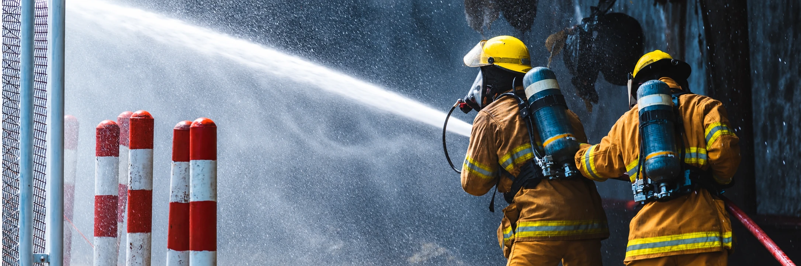

Preparação conectada à realidade
A Avante apresenta treinamentos in company adaptados ao ambiente de cada operação. As aulas combinam orientação e exercícios práticos, inclusive com a unidade móvel de treinamento apresentada pela empresa.

TREINAMENTO E PREVENÇÃO
Formação e preparação de brigadas para prevenir ocorrências, orientar pessoas e agir nos primeiros momentos de uma emergência.
Solicitar propostaFormação e preparação de brigadas para prevenir ocorrências, orientar pessoas e agir nos primeiros momentos de uma emergência.
A Avante apresenta treinamentos in company adaptados ao ambiente de cada operação. As aulas combinam orientação e exercícios práticos, inclusive com a unidade móvel de treinamento apresentada pela empresa.
Reconhecimento de riscos, uso inicial de equipamentos de combate a incêndio, comunicação de emergência, abandono de área e primeiros socorros fazem parte das atribuições divulgadas pela Avante.
Empresas, centros comerciais, shopping centers, indústrias e condomínios estão entre os ambientes citados pela Avante para seus treinamentos. O escopo deve ser dimensionado para o risco e a ocupação de cada local.
Converse com a equipe da Avante para definir necessidades, riscos e formato da atuação.